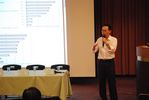

COSA活動記錄簿
留下COSA所辦活動之紀錄
首頁
相簿目錄
::
最新上傳
::
最新留言
::
熱門圖片
::
最高評分
最高評分
87 次觀看
(8 個評分)
109 次觀看
(8 個評分)
105 次觀看
(8 個評分)
130 次觀看
(8 個評分)
106 次觀看
(8 個評分)
106 次觀看
(8 個評分)
140 次觀看
(8 個評分)
127 次觀看
(8 個評分)
421 次觀看
(7 個評分)
157 次觀看
(7 個評分)

100 次觀看
(7 個評分)
97 次觀看
(7 個評分)
752 張圖片，共 63 頁
1
13
14
15
16
17
18
19
20
21
22
63

.jpg "檔案名稱=1 (10).jpg
檔案大小=60KB
圖片尺寸=800x600
加入日期=四月 24, 2007")